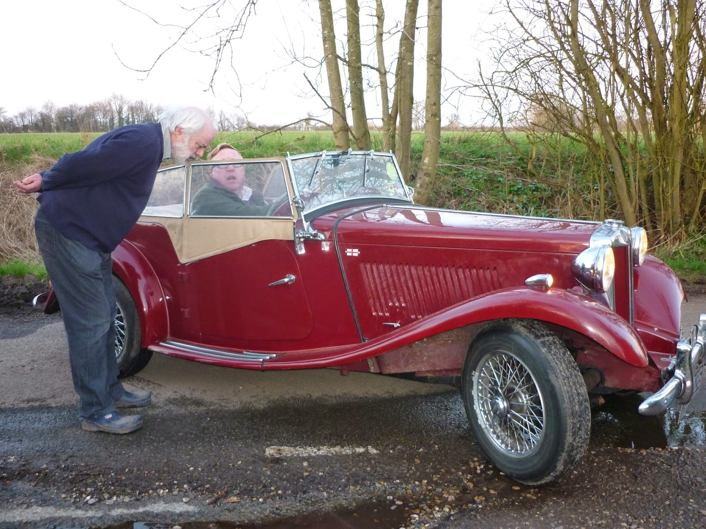
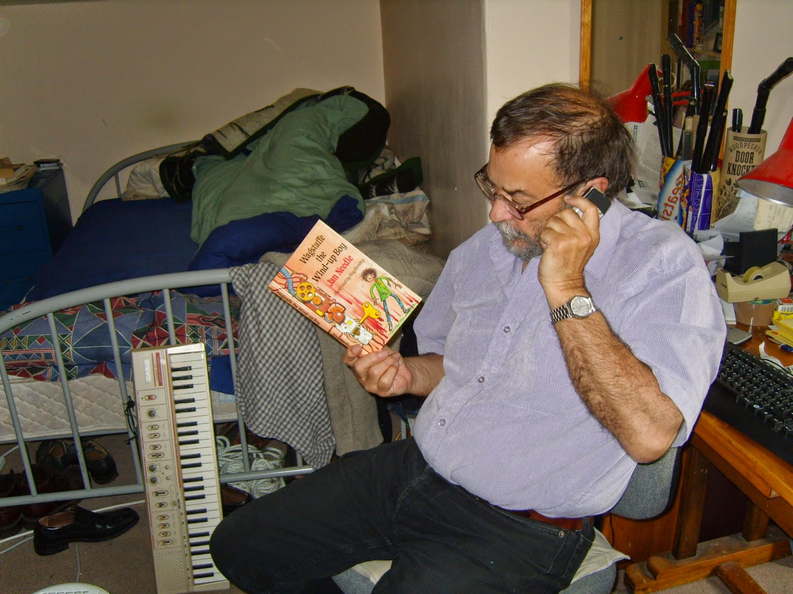

| Jan Needle - Baxter Ferret or Boddington Stoat? |
{kind=link}
* Reposted from 9 May 2014 *
In memory and appreciation of Jan Needle, 1943--2023
When I was making plans for a party to celebrate the new
edition of Jan Needle's Wild Wood I began to fantasize about asking all the guests to arrive dressed as the character who most closely resembled their secret self. The male guests would have had a generous choice: the Big Four from Wind in the Willows -- Rat, Mole, Badger and Toad ( and perhaps Otter for the more elusive spirits) and then Wild Wood's dour ideologue Boddington Stoat, flamboyant champagne socialist, O.B.Weasel, geriatric Harrison Ferret and any number of old sea rats and enthusiastic volunteers. I would be Wild Wood's Daisy Ferret, the
tyrannical illogical mother, always ready to lash out with her ladle
at any furry offspring within range while dimpling at O.B.Weasel's waistcoat and raising the kitchen stress-levels.
 |
| Off to the party Francis Wheen & Simon Heffer or Badger & Toad? |
{kind=link}
James Albert Needle – our Jan – was
born in Portsmouth in 1943. He blames his mother for his name. “She
was a strong-minded lady and knew for certain that she was pregnant
with another girl to join my sister Valerie. When I turned out male
she simply called me James Albert to go with the Needle to make me
Jan. That's what she'd always called the bump.” Now, we all know
that a mother's place is in the wrong but, if Jan really wanted us to
refer to him as James Albert – or J.A.Needle Esq (as per his
business cards for his first job at the Portsmouth Evening News
– or 'J.W.Urquhart' or 'Frank Kippax' (two discarded literary
pseudonyms) or even as 'Pooch' (as he was nicknamed in the
Portsmouth Sea Scouts) I expect that we'd oblige.
No such request has been received, however, and I
have a suspicion that Jan enjoys disconcerting the people who expect
him to be female. He quotes with some glee the reviewer of his third
children's novel The Size Spies (1979)
a comic romp which marked an abrupt change of direction from his
uncompromisingly realistic Albeson and the Germans
(1977) and My Mate Shofiq
(1978).
“Mrs Needle has written two thoroughly unpleasant books. Now she is merely being silly.”
Skewered! (or Needled?) Perhaps
the androgynous name suits his novelist's compulsion to look
at life from an alternative viewpoint and his readiness to challenge
assumptions. If that sounds pompous I'll simply point out
that Jan likes to tease.
Jan was “a Portsmouth slum kid” –
his words. When I read Albeson and the Germans, his comic and touching portrait of a child vandal, I wondered to what
extent he was writing from experience. Yet Jan made it to the
Grammar School and there was
nothing stereotypical about his background. “My
father was a strange one, a very clever man of nil education, of
dubious parentage and race, an inventor and a writer of romantic
short stories, and pretty well incapable of holding down a job.”
It
was his father who published Jan's first fiction in the Portsmouth
West Labour Party newssheet when Jan was seven years old and it was
also his father who introduced him to
sailing. It was his father, too, who played the mandolin-banjo with a friend
on concertina, occasionally allowing Jan to join in on a triangle and
calling themselves The Solent Minstrels. “The motors of my life,” says Jan, “are boats, music and work.
The glory of being a writer is that none of these are mutually
incompatible.” He wrote to his hero, Arthur Ransome, at age eleven
(more testimony to the power of the Swallows and Amazons series to
inspire children way beyond the yott-owning classes) and treasured
the reply he received. He remains a nifty performer on the
Ransomesque penny whistle.
{kind=link}
Portsmouth Grammar School gave up on
Jan in the sixth form and he went to work for the local paper. That
was it, really. “Looking back on it now, a life of many children,
many jobs, many disasters and a fair few triumphs (in my terms
anyway) I can see that most of my brain activity went into scrawling
on bits of paper.” So what has this scrawling consisted of – apart
from the first class honours degree that Jan obtained from Manchester
University in his mid-twenties? His first short stories had been published
when he was still in his teens and he had moved to Manchester and
joined the Daily Herald before he went to university. “When
I studied drama I began to write it (essays being for too boring for
my taste).” By the time he graduated he had had two radio plays
produced and was working as a freelance journalist and sub-editor.
Wild Wood was his first novel.
It was politically inspired “By a sudden vision of Mr Toad
battening on the rural servant class. I'd never written a novel
before so I started it the next day and finished it in about a month.
Didn't know how difficult it was meant to be.” There were copyright
problems with Methuen (then owner of the Wind in the Willows
rights) which meant that Wild Wood remained unpublished until
three more novels had been written and Methuen woke up to the fact
that they could / should be making a deal for ££.
A glance at Jan's
list of titles shows stories pouring out through the 1980s and into
the early 1990s. In fact it's quite hard to compile a list. There's
one at http://www.fantasticfiction.co.uk/n/jan-needle/ . It includes his critical work on Bertolt Brecht (dim? I don't think so!) but omits the adaptations which he made for Walker
Books, especially Moby Dick, of which he is rightly proud.
More seriously this list also ignores Jan's work as a TV script-writer on
series such as Grange Hill, Brookside and Truckers
(1987)
Jan's work was often controversial –
he remembers “being rung up
by
the headmaster of a school in Peckham to cancel my invitation to
appear as keynote speaker in a conference on “Realism in Children’s
Literature.” The teachers had had a vote, he told me, and
had banned me from his school. My brand of realism was too realistic
for them, as their brand of democracy was possibly too weird for me.”
Mrs Thatcher tried to get A
Game of Soldiers,
Jan's 1983 play about the Falklands war cancelled but ITV refused.
More recently an Army website mounted a campaign against Killing
Time at Catterick
(aka The
Skinback Fusiliers)
which was based on the actual testimony of teenage recruits. His
writing is often gritty and he's not afraid of violence – I have to
admit that when I read the first of his sea novels A
Fine Boy for Killing
(1996) it was too much for my gently Hornblower-nurtured tastes.
{kind=link}

He can also be very funny and I fail to see why all the children who read and love Roald Dahl's The Twits, Fantastic Mr Fox (etc) – and are looking round for more – don't get Jan's Wagstaffe the Wind-up Boy (1987) thrust into their hands. Perhaps it's because book-buying adults can't cope with a story where the parents run away from their child? Barry Hutchison, successful author of the 'Invisible Fiends' series links his decision, aged 9, to become a writer with his reading of Wagstaffe. “To nine-year-old me, this story of a robotic boy who can pee through his finger was just the bee's knees.” Jan came to stay with us when a stage version of Wagstaffe the Wind-up Boy was being performed at the Mercury Theatre and instantly won the hearts of our youngest children with his subversive approach to issues such as farting and teeth-cleaning.
Wagstaffe,
poor lad, suffered a terrible accident on the M62 near Oldham and
with the ghoulish imitativeness of life, so did Jan, five years
later. He was writing “big dirty thrillers” for Harper Collins:
he'd been commissioned to deliver six well-paid episodes for The
Bill; he had five children and his domestic lives were good. It was a
wild windy night (like the night Cedric Willoughby almost killed
the elderly Baxter?), Jan's van was stationary and was hit by a truck. One of his young
passengers was killed and Jan suffered serious brain damage.
This might have
left him “dim as a dirty lampwick” for the rest of his life. In
fact it lasted eight years. I think it was the later volumes of the William Bentley sea series that brought Jan's writing back into publishable form again but I might
be mistaken. His recent writing includes political thrillers, more sea stories and Silver
and Blood
– a retelling of Treasure
Island
that's far livelier and more original than Andrew Motion's novel of the
same name. I retain a special fondness for Jan's early children's books. The external circumstances of childhood may have changed in the thirty five years since Shofiq and Albeson were young but the pressure on children,
their qualities of naivety and sweetness (even, perversely, when
their behaviour seems appalling) remain heart-rendingly the same.
Wild
Wood, fortunately, is ageless. “Good God,” says Jan, “If I've had a
wasted life, I've certainly had fun wasting it!”
{kind=link}
{kind=link}
{kind=link}
Re-posted in memory and appreciation of Jan Needle, 1943--2023